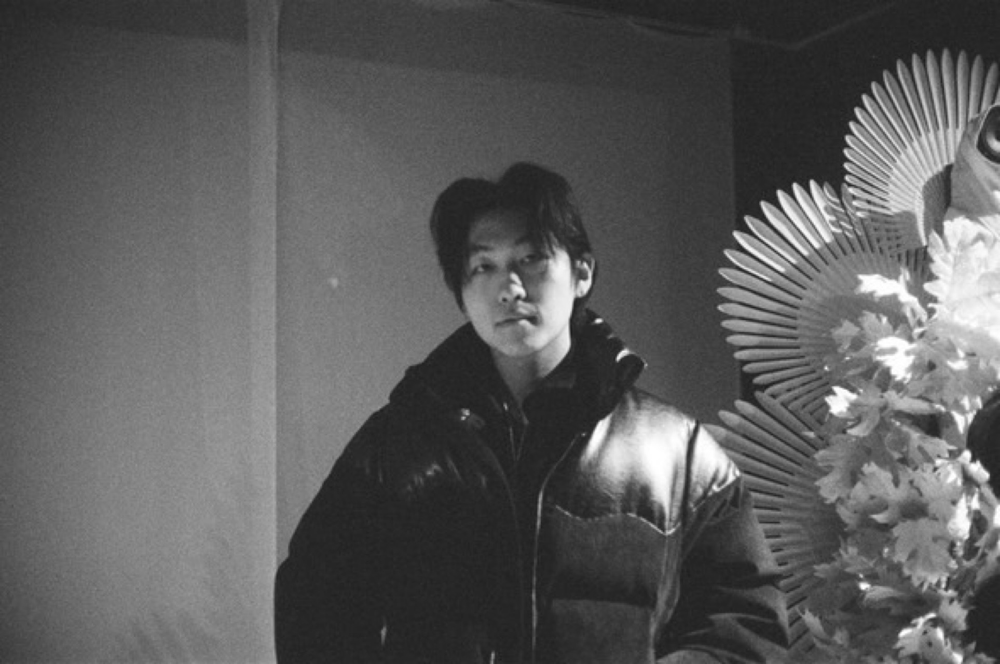

Bryan Youn
Architecture · Interior Design · Graphic Design
I am a sophomore at the University of Wisconsin–Madison studying Design Innovation and Society, Biochemistry, and Architecture. My work sits at the intersection of science and spatial design — I draw from molecular structures, material behavior, and natural systems to inform architectural decisions that are both conceptually rigorous and experientially rich.
I believe architecture should do more than shelter. It should narrate, provoke, and orient. Whether designing a family residence inspired by organic chemistry or a garden shed guided by seasonal light, I approach each project as an opportunity to embed meaning into space.
Education
University of Wisconsin – Madison
B.S. Design Innovation and Society
B.S. Biochemistry
Certificate in Architecture